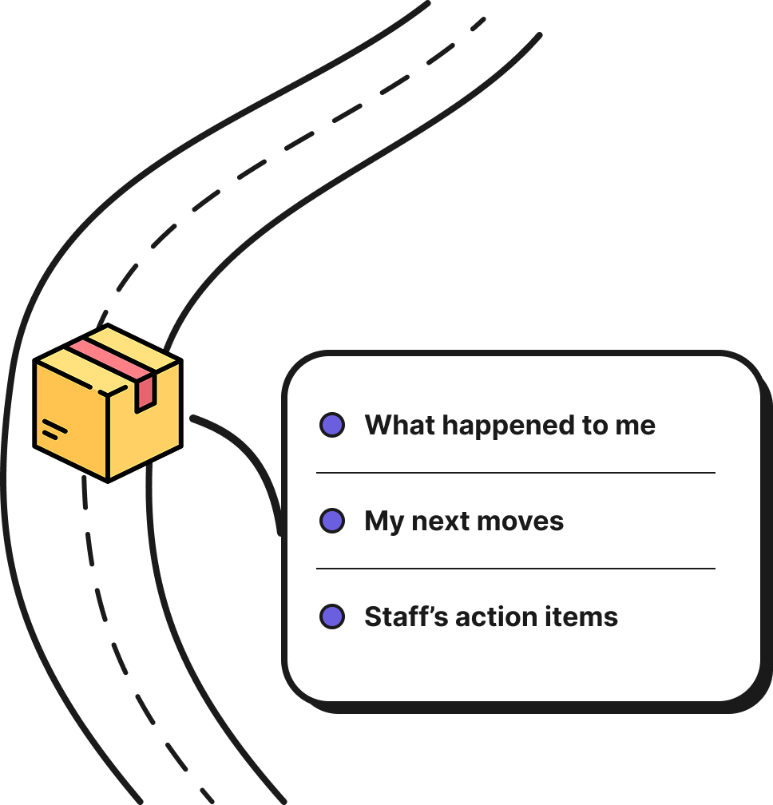
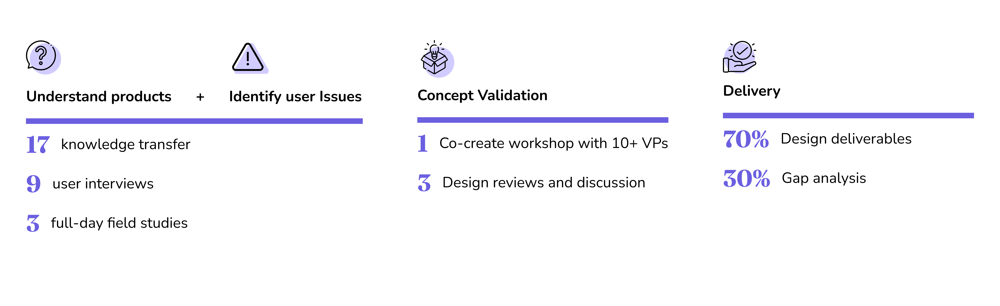
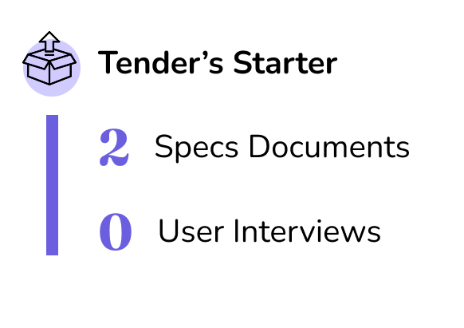

EPAM is a global consulting and digital engineering company, founded in 1993 and now operating across more than 55 countries, that partners with enterprises to design, build, and ship technology-driven products and platforms. Within EPAM, the design team is expected to go beyond delivering wireframes and visual specs — clients look to us to help navigate ambiguity, frame the right problems, and stay engaged as a thinking partner across the full arc of a project, from initial problem definition through solution design and hands-on implementation, using structured design methods such as workshops, discovery sessions, and collaborative ideation to get there.
Design what tracking could look like in 20-30 years, credible enough to win budget from the board.
Predictive tracking with AI, plus a better shipment tracking info presentation so it doesn't need explaining.
Why staff run into shipment tracking issues and what's actually blocking them.

A shipment tracking tool used by 9 functions
4 designers (incl. me)Project managerBusiness analystLogistics specialistAI architect
12+ VP stakeholders(client)
Oct 2025 – Apr 2026(6 months)
This wasn't a dev-handoff project. The leadership board needed a vision credible enough to approve budget on a 20–30 year horizon — so design was the tool for asking questions and getting senior stakeholders to align, not for producing specs.

Early research revealed a sharper problem than the one we'd been hired to solve: visibility into shipment information wasn't actually the issue — the data on what happened to a shipment already existed in abundance. The real problem was that operations and customer service staff couldn't quickly determine a shipment's health, what was blocking it, who owned the next step, or what to do about it. That information existed, but it was scattered across multiple internal systems and buried in cryptic operational codes. So staff built their own workarounds — calls, emails, tribal knowledge — to piece together an answer.
One deliverable: an AI quick-glance feature for internal ops and customer service staff — distilling fragmented, jargon-heavy shipment data into an instant, plain-language read on a shipment's status.
Scattered systems, cryptic codes, and cross-team calls or manual lookups just to piece together a shipment's status.
Quick Glance of one instant, plain-language read - what's happening, what's blocking it, and what to do next.
We worked on a tender project to build a fully interactive prototype — a working chatbot paired with a chatbot admin platform. I started with almost nothing to go on: just two spec documents and no direct access to end users. The result: a fully interactive prototype we vibe-coded end-to-end and shipped in under a month.

Internally used chatbot & its Admin portal
3 backend developersMe — end-to-end UX
May – Aug 2026(~3 months)
Almost entirely inside Claude — before any implementation began. Not a single linear pass — this three-step loop repeated every few days, once per feature, from May through August.
I fed Claude the two raw specs and asked it to translate documentation into user goals, scenarios, use cases, and stories — what metrics matter to the user, why they matter, and what actions the user is trying to take.
Once I understood the scenario, I described what we wanted to build in plain language. Claude structured it into complete, gap-checked design requirements. I also drafted and visually tested solutions before touching implementation.
Once I'm satisfied with the design, I move on to Code to build it on my local and show my ideas to my team. Once we are all agree with the solution, I commit my changes to the repository.